modismoa version 4
The modismoa function plots Moderate Resolution Imaging Spectroradiometer (MODIS) Mosaic of Antarctica (MOA) images, grounding lines and coastlines. Plotted data are high-pass 1.
This function is a plugin for Chad Greene's Antarctic Mapping Tools package.
From the file description on the National Snow and Ice Data Center (NSIDC) website:
The National Snow and Ice Data Center (NSIDC) and the University of New Hampshire assembled two digital image maps and two snow-grain-size images of the Antarctic continent and surrounding islands that provide a nearly-perfect cloud-free view of the ice sheet, ice shelves, and land surfaces using two different sets of data:
- MODIS Mosaic of Antarctica 2003-2004 (MOA2004) Image Map
- MODIS Mosaic of Antarctica 2008-2009 (MOA2009) Image Map.
The MOA2004 Image Map consists of two cloud-free digital image maps that show mean surface morphology and a quantitative measure of optical snow grain size on the Antarctic continent and surrounding islands using 260 orbit swaths from the Moderate Resolution Imaging Spectroradiometer (MODIS) instruments on board the NASA EOS Aqua and Terra satellites. The 260 orbit swaths used to create the 2003-2004 MOA Surface Morphology Image Map was acquired 20 November 2003 through 29 February 2004 for the full spring-summer season. Corresponding coastlines and ice sheet grounding lines are also provided.
Contents
- Syntax
- Description
- Requirements
- Installation
- Example 1: Plot a Mosaic of Antarctica
- Example 2: Plot coast line and grounding line
- Example 3: MOA plot zoomed based on name of a location
- Example 4: MOA plot of a specified width
- Example 5: Centering on arbitrary geographic coordinates
- Example 6: Include an inset
- Example 7: Specify a year
- Example 8: Specify resolution
- Example 9: Specify contrast
- Example 10: Mimic MOA's logo
- Citing these Data
- Author Info
Syntax
modismoa
modismoa(lat,lon)
modismoa('location')
modismoa(...,mapwidth)
modismoa(...,'year')
modismoa(...,'inset','insetLocation')
modismoa(...,'resolution',res)
modismoa(...,'contrast',ContrastOption)
modismoa(...,'clearocean')
modismoa('gl')
modismoa('gl','propertyName',propertyValue)
modismoa('coast')
modismoa('coast','propertyName',propertyValue)
h = modismoa(...)Description
modismoa plots a polar stereographic 71 image of Antarctica.
modismoa(lat,lon) centers a 500-kilometer-wide map at the location given by lat, lon.
modismoa('location') searches the SCAR database for the specified 'location' and centers a map at that location. (See the scarloc function in the Bedmap2 Toolbox for Matlab).
modismoa(...,mapwidth) centers a mapwidth-kilometer map at the specified location. Default mapwidth is 500 km.
modismoa(...,'year') specifies a year of MODIS MOA image, grounding line, or coast line. The year must be a string (enclosed by apostrophes) and can only be '2004' or '2009'. Default year is '2009'.
modismoa(...,,'inset','location') places an inset at one of these cardinal value locations:
- 'southeast' lower right corner (default)
- 'northwest' upper left corner
- 'northeast' upper right corner
- 'southwest' lower left corner
modismoa(...,'resolution',res) specifies the resolution of the plotted data. Can be 750 m, 125 m, or 'downsampled'. By default, a map of width greater than 2000 km will plot 750 m data downsampled to 3750 m; for 400 < mapwidth <= 2000 km, 750 m resolution data are plotted; for maps up to 400 kilometers wide, 125 m data are plotted. Plotting 125 m data for very large areas might crash your computer.
modismoa(...,'contrast',ContrastOption) specifies contrast, or the axis limits of the color scale when plotting 125 m or non-downsampled 750 m resolution data. Specifying contrast on a large downsampled 750 image will have no effect. Following the contrast options described in the web-based MOA map users' guide, ContrastOption may be:
- 'uhc' (ultra-high contrast [15875 16125])
- 'vhc' (very high contrast [15800 16200])
- 'hc' (high contrast [15500 16500])
- 'moa' (nominal contrast [15000 17000])
- 'lc' (low contrast [12000 20000])
- 'vlc' (very low contrast [9000 23000])
- 'ulc' (ultra-low contrast [1 32000])
- NumericRange (any two-element range)
Setting contrast to a NumericRange is equivalent to following the modismoa command with caxis(NumericRange).
modismoa(...,'clearocean') sets all zero values to NaN to make the ocean clear. Note that this usage may still leave dark edges around the continent. If you would like to plot ocean data alongside a modismoa image, consider plotting the modismoa image first.
modismoa('gl') plots the MODIS MOA grounding line.
modismoa('gl','propertyName',propertyValue) formats the grounding line with name-value marker style properties.
modismoa('cl') plots the MODIS MOA coast line.
modismoa('cl','propertyName',propertyValue) formats the coast line with name-value marker style properties.
h = modismoa(...) returns the handle h of plotted object(s).
Requirements
This function requires Matlab's Mapping Toolbox and the Antarctic Mapping Tools package, which is available free of charge on the Mathworks File Exchange site.
Installation
To use this function, you must first run modismoa_install. You will only need to run it once. The installation script downloads the data and formats it in a way that is efficient for the modismoa function to call. This installation script may take some time to run because it downloads a few gigabytes of data.
If your network administrator has imposed strict firewall settings, the automatic download may fail. If this happens, simply download these the following files manually, place them in your current folder, and try to run the installation script again:
2009 125 m 2009 750 m 2009 coast 2009 grounding line 2004 125 m 2004 750 m 2004 coast 2004 grounding line legacy data
Example 1: Plot a Mosaic of Antarctica
Here we create a simple image of the whole continent. Calling the modismoa function without any arguments will plot the 750 meter hp1 dataset, downsampled to 3750 meter resolution
modismoa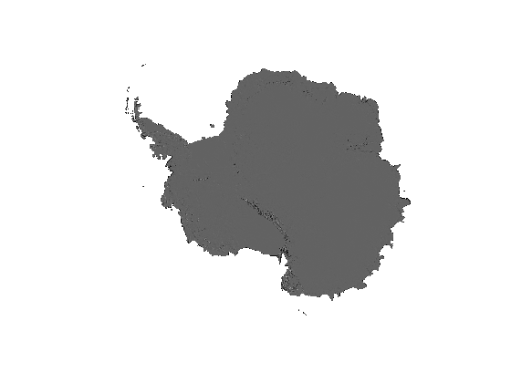
Example 2: Plot coast line and grounding line
Plotting the coast line of Antarctica is nearly as easy as showing the Mosaic of Antarctica:
close % (closes previous figure) modismoa 'coast'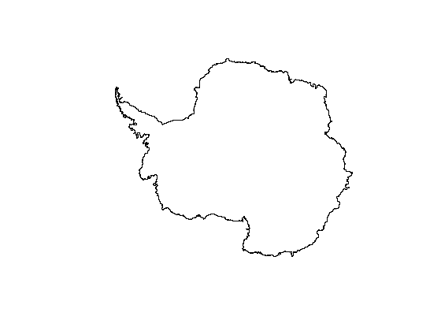
Now overlay a grounding line in blue:
close modismoa('gl','color','m')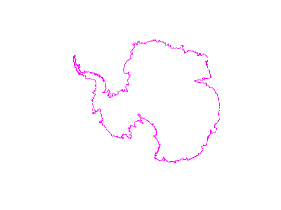
Example 3: MOA plot zoomed based on name of a location
Here's a map of Pine Island Glacier:
close
modismoa('pine island glacier')
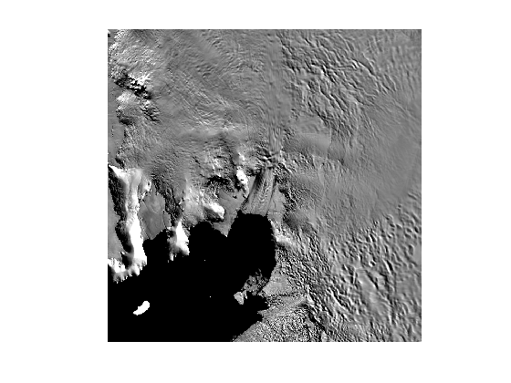 Example 4: MOA plot of a specified width
A 1000-km-wide image of the area surrounding McMurdo Station.
close modismoa('McMurdo Station',1000) scalebar('color','white')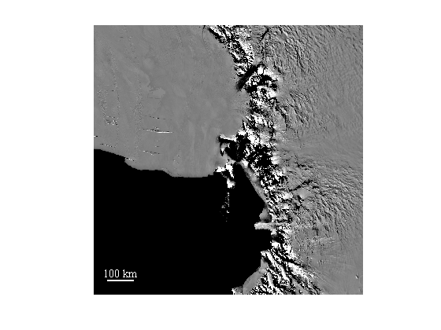
Example 5: Centering on arbitrary geographic coordinates
Below we center a map on some arbitrary geographic coordinates (67S,116E) and overlay a green grounding line.
close modismoa(-67.1,115,200) modismoa('gl','color','green') scalebar('length',50,'color','w','location','southeast')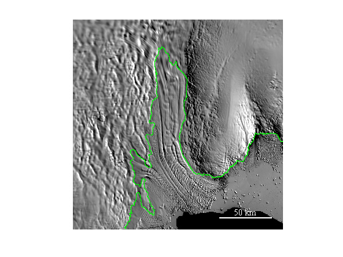
Example 6: Include an inset
Below, a 1200-kilometer-wide map is centered about Dyer Plateau and an inset is placed in the upper right-hand corner of the image:
close modismoa('Dyer Plateau',1200,'inset','northeast')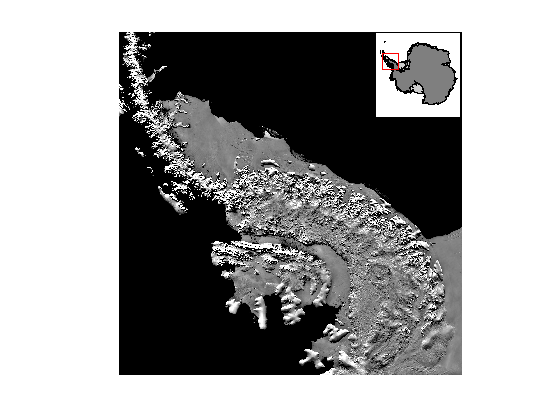
Example 7: Specify a year
MODIS MOA data are currently available for 2004 and 2009. Here's a comparison of grounding lines:
figure modismoa('pine island glacier',200) modismoa('gl','color','green','2004') modismoa('gl','color','magenta','2009') modismoa('coast','color','blue','2004') modismoa('coast','color','red','2009') scalebar('location','northeast','length',50)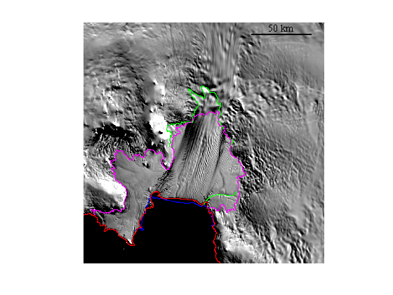
Similarly, you can include a year with an image map. Here we zoom in on (64.9 S,60.2 W):
close figure('position',[100 100 900 400]) subplot(1,2,1) modismoa(-64.9,-60.2,200,'2004') scalebar('color','w','location','northeast','length',50) text(0,1,'MOA2004','units','normalized',... 'backgroundcolor','w',... 'verticalalignment','top',... 'horizontalalignment','left') subplot(1,2,2) modismoa(-64.9,-60.2,200,'2009') text(0,1,'MOA2009','units','normalized',... 'backgroundcolor','w',... 'verticalalignment','top',... 'horizontalalignment','left')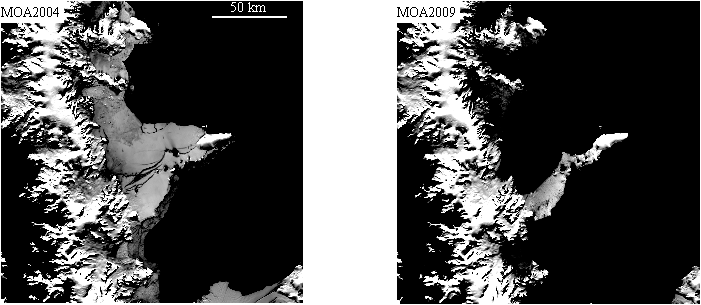
Example 8: Specify resolution
By default, the modismoa chooses a resolution depending on the size of the map you're plotting. Maps smaller than 400 kilometers in width have plot 125 meter resolution data, but maps between 400 and 2000 kilometers in width plot 750 meter resolution data. If you would like to plot a 600-kilometer-wide map at 125 meter resolution, you can do so as shown below. You will notice that plotting large maps at high resolution may take some time to load and render the data.
close modismoa('lambert glacier',600,'resolution',125,'inset','southwest')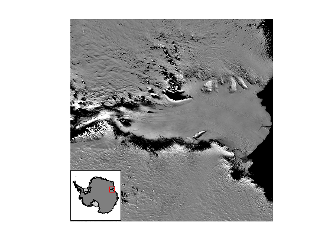
Example 9: Specify contrast
Adjusting contrast can help illuminate flow lines or other features. Specifying contrast will not work on continent-wide maps which are heavily downsampled and use a different range of brightness levels, but if you're zooming in to your favorite region, setting contrast can be accomplished with the 'contrast' option, or by tinkering with caxis values after you've plotted the modismoa image. Below we plot most of MOA's option contrast levels (skipping 'vlc' to make it fit). In addition to MOA's options, you may set your own numeric range of brigtness levels.
figure('position',[100 100 900 600]) subplot(2,3,1) modismoa('rutford ice stream',100,'contrast','ulc') scalebar('length',25,'location','southeast') text(0,.95,' ulc contrast','units','normalized','backgroundcolor','w') subplot(2,3,2) modismoa('rutford ice stream',100,'contrast','lc') text(0,.95,' lc contrast','units','normalized','backgroundcolor','w') subplot(2,3,3) modismoa('rutford ice stream',100,'contrast','moa') text(0,.95,' default contrast','units','normalized','backgroundcolor','w') subplot(2,3,4) modismoa('rutford ice stream',100,'contrast','hc') text(0,.95,' hc contrast','units','normalized','backgroundcolor','w') subplot(2,3,5) modismoa('rutford ice stream',100,'contrast','vhc') text(0,.95,' vhc contrast','units','normalized','backgroundcolor','w') subplot(2,3,6) modismoa('rutford ice stream',100,'contrast','uhc') text(0,.95,' uhc contrast','units','normalized','backgroundcolor','w')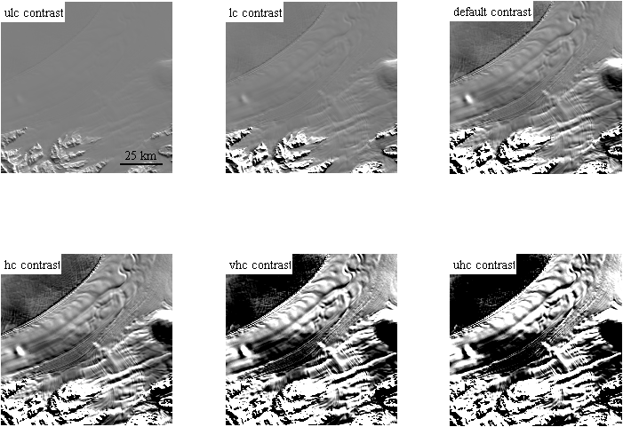
Example 10: Mimic MOA's logo
This example plots the MOA logo. It requires Kelly Kearney's plotboxpos and my rgb function.
% Plot continent: antmap('oceancolor','k','northernlimit',-65) modismoa caxis([80 110]) plotm(-81.4,-163,80,'rs','markerfacecolor','w'); % Create text: text(-.39,.29,'MOA','fontname','helvetica cv','fontsize',40,... 'fontweight','bold','color',rgb('light blue'),... 'verticalalignment','bottom') plot([-.39 .39],[.29 .29],'w-','linewidth',2); text(-.39,.29,'MODIS Mosaic of Antarctica','fontname','helvetica cv',... 'fontsize',21,'fontangle','italic','fontweight','bold',... 'color','w','verticalalignment','top') % Get position of axis in figure and create inset axes: p=plotboxpos(gca); axes('position',[p(1)+.02 p(2)+.02 p(3)/2.8 p(4)/2.8]) % Plot inset: modismoa(-81.4,-163,80,'contrast','very high') set(gca,'visible','on','xcolor','w','ycolor','w')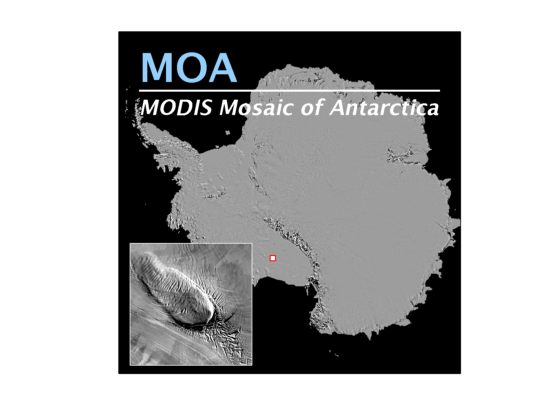
Indeed, the red lines are not plotted, because they're awkward.
Citing these Data
When citing MODIS MOA data, please cite the following:
Haran, T., J. Bohlander, T. Scambos, T. Painter, and M. Fahnestock. 2014. MODIS Mosaic of Antarctica 2008-2009 (MOA2009) Image Map 2009. [indicate subset used]. Boulder, Colorado USA: National Snow and Ice Data Center.
Scambos, T., T. Haran, M. Fahnestock, T. Painter, and J. Bohlander. 2007. MODIS-based Mosaic of Antarctica (MOA) data sets: Continent-wide Surface Morphology and Snow Grain Size. Remote Sensing of Environment 111(2): 242-257.
Bohlander, J., T. Scambos, T. Haran, M. Fahnestock, 2004. A New MODIS- based Mosaic of Antarctica: MOA. Eos. Trans. AGU, 85(47), F452.
Author Info
This function was created by Chad A. Greene of the Institute for Geophysics and The University of Texas at Austin, July 2014. Updated August 2014.